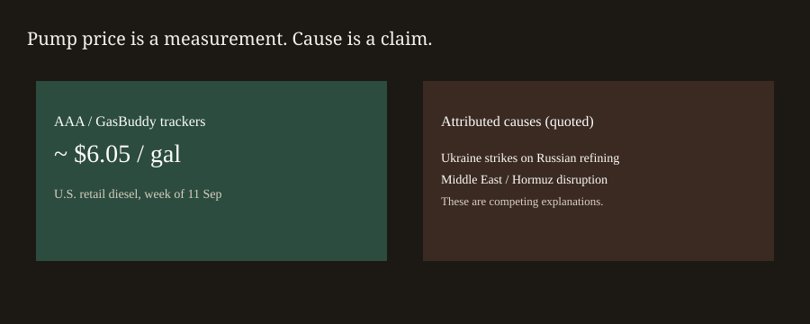
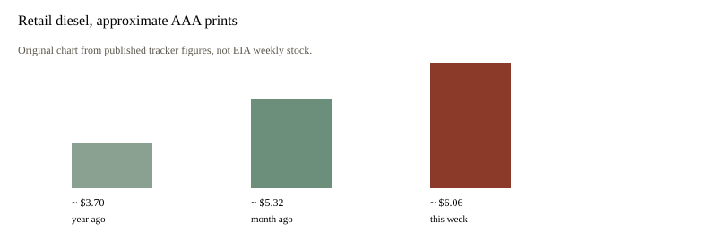

United States · energy · 13 September 2026
U.S. retail diesel printed near $6 a gallon. Trump asked Ukraine to stop hitting Russian diesel plants.

What is agreed across desks
Price trackers printed a record national average for retail diesel late last week. Axios, citing AAA on Friday, put the figure at $6.0556 a gallon, up from about $5.32 a month earlier and about $3.70 a year earlier. Reuters, citing GasBuddy, said the average rose over $6 on Thursday. Those series disagree by pennies. Both are above $6. Diesel is the fuel for most long-haul trucking, much of rail switching, farm equipment, and some home heat in the Northeast.
On Sunday in Doonbeg, Ireland, Trump told reporters that Volodymyr Zelenskyy “has to stop knocking out diesel fuel in Russia.” AP and Reuters carry the same core quotes: “There are plenty of other targets. Don’t hit diesel fuel, because that’s hurting, that’s hurting the world.” He added that the shortage “isn’t done by the Middle East, this is done by what’s happening with Russia and Ukraine.”
Ukraine has for months used long-range drones against Russian refineries and related infrastructure. Russia imposed a diesel-export ban in July after domestic shortages. Kyiv’s stated theory is that oil products fund and fuel the invasion. Overnight into Sunday, wires also described Russian strikes around Odesa and a Ukrainian strike that local officials in Tatarstan said killed two people in Nizhnekamsk.
What is only a quote
“That’s hurting the world” is a presidential causal claim. A pump average cannot identify a single culprit. Distillate inventories in the United States have been described by EIA, in secondary energy coverage, as below the five-year range. Conflict affecting the Strait of Hormuz is a second supply story on the same calendar. Trump’s sentence denies that second story. Denial is still a claim.
Ukraine’s “legitimate target” line is a legal and strategic position. It is not a measurement of how many barrels left the market this week. Treating either side’s sentence as the cause of $6.05 is complicity.
Mechanism a reader needs
Crude oil is not diesel. A barrel must pass through a refinery. When refineries are damaged, the crack between crude and distillate can widen even if crude later eases. That is why product prices can stay high after a crude pullback.
Diesel’s weight in the CPI energy complex is smaller than gasoline’s, but diesel enters food and goods through freight. A 60 percent year-over-year rise in retail diesel is a cost shock to shippers before it is a political talking point.
Export bans move barrels from the seaborne market back into a domestic market. Russia’s July diesel-export ban removed a supply stream from Europe and other buyers. That is a separate mechanism from a drone hitting a unit in Russia.
What this story is not
It is not a finding that Ukraine caused the entire AAA print. It is not a finding that Hormuz caused the entire print. It is not a peace plan. The checkable pair is a price near $6 and a request issued in County Clare.
Two price-tracker families are in play. AAA surveys stations. GasBuddy scrapes and crowdsources. They can diverge by a few cents. Both crossing $6 in the same week is the robust fact.
Freight pass-through is slow. A trucker pays diesel this week. A retailer may change a shelf price next month. Brown University’s $46 billion consumer-cost estimate, cited by Axios, is a model, not a cash register.
Hormuz and Ukraine can both tighten distillate at once. Saying so is how commodity markets add shocks. A presidential sentence that names only one shock is a data point about the speaker. It is not a regression.

Source articles and scores
Images: original SVGs. Tracker references: AAA via Axios; GasBuddy via Reuters.